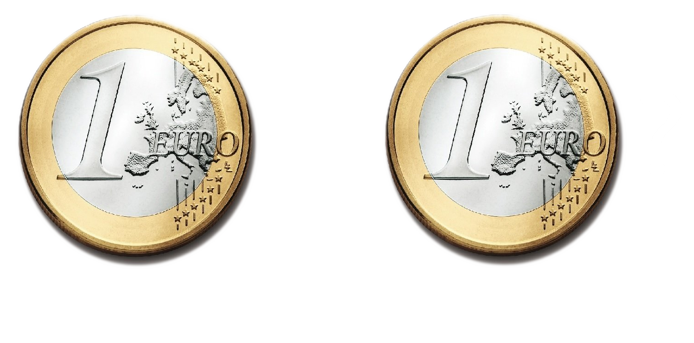

<section data-markdown data-separator-vertical="---">
  <script type="text/template">
    # Monnaie ?

    =

    Un **moyen** (et non un but)

    Fait pour servir l'humain et non l'__asservir__

    ---

    # Définition

    « _C’est pourquoi on a recours à la monnaie,<br/>
    qui est, pour ainsi dire un **intermédiaire**.<br/>
    Elle **mesure** tout, la **valeur** supérieure d’un objet<br/>
    et la valeur inférieure d’un autre,<br/>
    par exemple combien il faut de chaussures pour équivaloir<br/>
    à une maison ou à l’alimentation d’une personne,<br/>
    faute de quoi, il n’y aura **ni échange**,<br/>
    **ni communauté** de rapports._ »

    _Aristote_<br/>
    <small>"Ethique à Nicomaque", 300 av J.C. (trad. R. Bodéïs, GF)</small>

    ---

    # Monnaie

    = Outil de **mesure**<br/>
    de valeurs économiques

    = **Unité de mesure** ?

    ---

    # Unité de mesure
    ## Principe d'**invariance**

    - Température : Degré Celsius = Etats de l'eau (solide/gazeux)

    - Longueur : Mètre = 10 000 000 ème du demi méridien terrestre

    - Masse : Kilogramme = 1 dm 3 d'eau pure à 4°C

    - Temps : Seconde = multiple de la période d'un atome de Cesium

    ---

    # Euro
    ## Quel invariant ?

    

    1 Euro (2002) = 1 Euro (2022) ??

    ---

    # Euro

    Evolution de la masse monétaire (en milliard €)

    

  </script>
</section>
